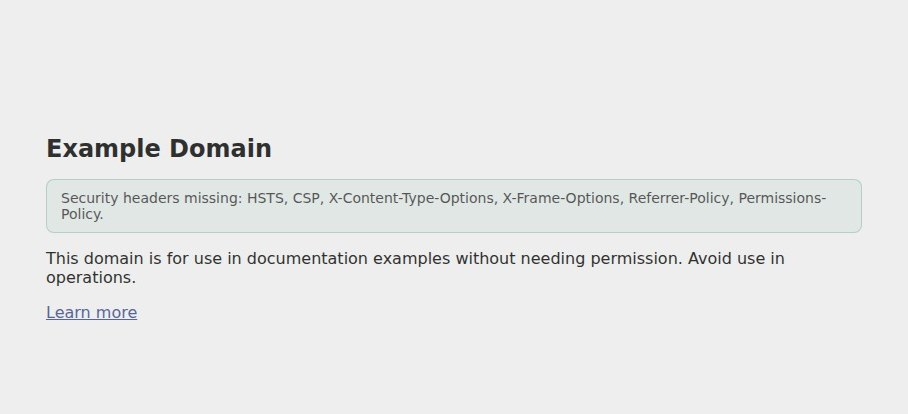
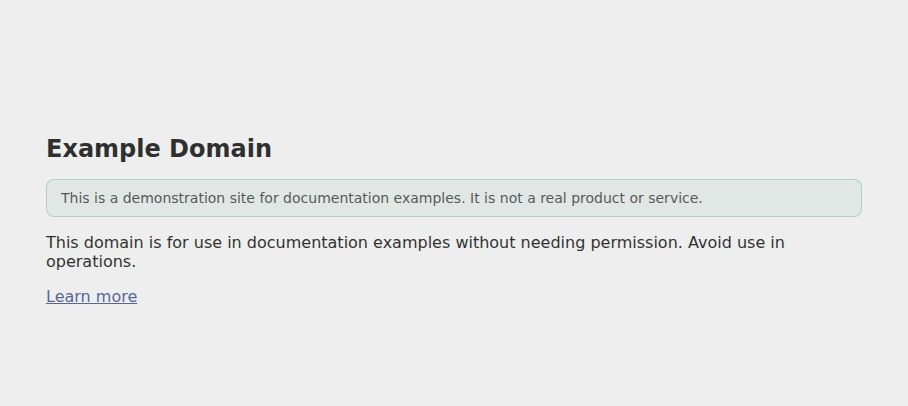
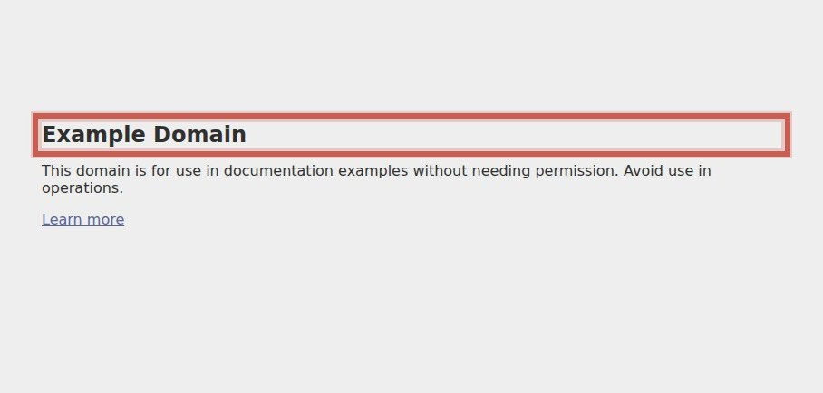
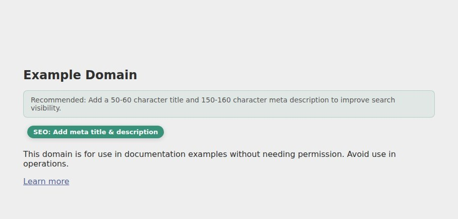
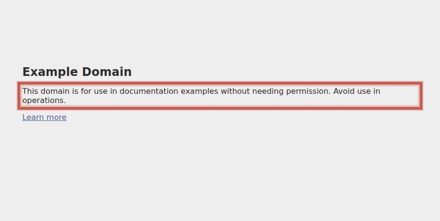
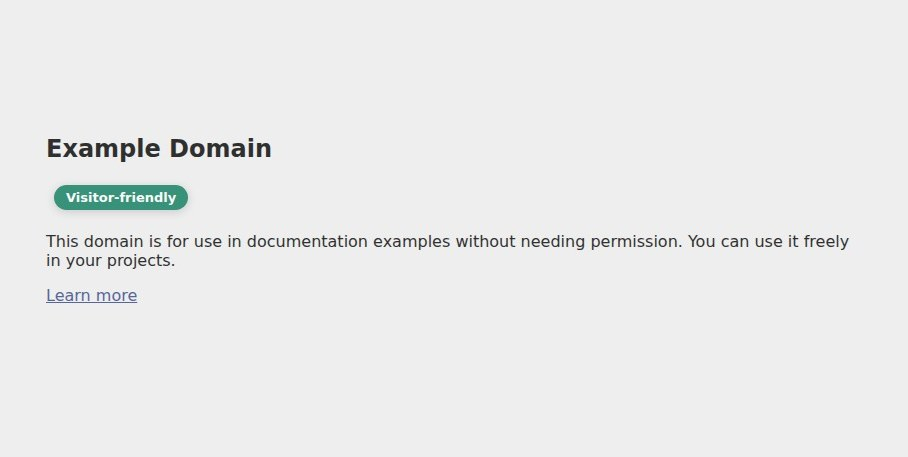
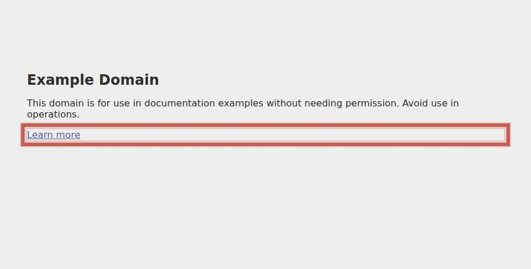
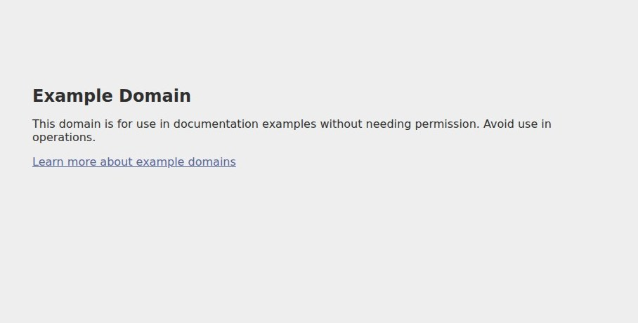
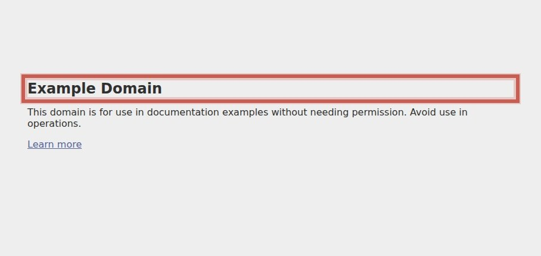
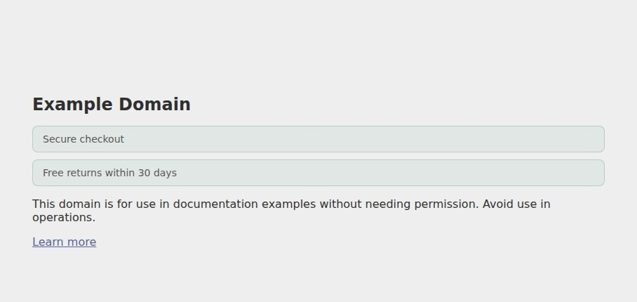

Missing security headers
Six of six standard security headers are absent, weakening protection against XSS, clickjacking, and downgrade attacks.


No value proposition
The homepage fails to state what is sold or why it is better, leaving visitors without a clear reason to engage.


Weak page metadata
Search and social previews are degraded because page title, meta description, and Open Graph tags are missing or outside recommended lengths


Copy lacks visitor language
The page copy is technical and generic, not written in terms a typical visitor would use to describe their need or the solution.


Single CTA gives no context
The only call to action, 'Learn more', provides no indication of what will be learned or why it matters, failing to reinforce any message ab


Missing trust signals above the fold
The homepage shows no sign of returns policy, guarantee, reviews, security badge, so a first-time visitor has nothing to offset purchase ris